Design and Verification of SEE-Tolerant ASICs at CERN: Methodologies and Challenges
CERN SEE 容错 ASIC 的设计与验证：方法学与挑战
简介
论文针对 CERN LHC 探测器高辐射环境下定制 ASIC 的 Single Event Effects (SEE) 容错难题：HEP 粒子通量比汽车/航空环境高几个数量级，而选择性 TMR 加固过程易错，必须系统化验证。方法上以 Triple Modular Redundancy (TMR) 为核心，用开源工具 TMRG 依据 RTL 注释 directive 自动三化 Verilog 设计，支持全 TMR 与选择性三化（如仅三化控制路径）；验证上由 Python fault enumerator 从 RTL 或 Gate Level Netlist 生成可按策略过滤的故障节点清单，SEE UVC 集成于 UVM 环境，以 deposit 注入 SEU、force/release 注入 SET，并保证随机稳定性以复现同一激励下的有/无故障仿真，按 fault campaign 跟踪通过率与 fault coverage；同时通过修改标准单元原语建模 SEU，用 formal model checking 在 GLN 级证明每个三化节点的 SEU 在两个时钟周期内被纠正。论文还归纳了综合优化删除 voter、误用非 voted 信号、缺失 else 等典型 SEE 漏洞，结论是 SEE 验证必须尽早纳入验证策略，且在人力、算力、license 与时间上开销显著。
问题
LHC 高辐射环境使 SEU/SET 等 Single Event Effects 成为高能物理定制 ASIC 的核心设计与验证挑战；对整个设计做 TMR 的面积/功耗代价过高，设计者只能做选择性加固，而该过程易错。论文要解决的问题是：如何自动化插入 TMR，并通过仿真故障注入与 formal 方法系统化证明 TMR 意图与实现的正确性，及时发现并防止 SEE 漏洞。
方法
以 TMR 为核心的 SEE 缓解与验证方法学：(1) 设计侧：开源工具 TMRG 通过 RTL 注释 directive 自动三化 Verilog 设计，支持全 TMR（组合逻辑、时序逻辑、时钟全部三化，可抗 SEU 与 SET）与选择性三化（如仅三化控制路径），并用 majority-voted state 避免三块内部状态发散；(2) 仿真验证：Python fault enumerator 接收 RTL 或 Gate Level Netlist (GLN) 与过滤策略，生成 SystemVerilog 故障节点清单 fault.sv；SEE UVC 集成于 UVM 环境，包含 see_rand_seq 随机注入序列、coverage 收集组件与 fault_if 调试接口，SEU 以 memory element 上的反向值 deposit 建模、SET 以 net 上的临时 glitch（force/release）建模，借助 uvm_hdl_* 方法实现仿真器互操作，并保证随机稳定性使同一功能激励可在开/关故障注入下复现；按 fault campaign（约束随机回归多次运行）跟踪 pass rate 与 coverage 评估验证完备性；(3) formal 验证：修改时序单元标准 cell 原语加入 q_seu 信号建模 SEU，自动生成针对所有 TMR 节点的 SVA assertion/assumption 与 TCL 文件，在 GLN 级用 model checking 证明每个 triplet 最多注入一个 SEU、SEU 持续一个时钟周期的条件下，三化副本在两个时钟周期内恢复一致。
关键结果
未在论文中说明
创新点
论文未做系统的相关工作对比，其价值在于将 CERN 多年实践整合为一条自动化闭环：TMRG 自动三化、fault enumerator（支持 RTL/GLN 与按测试意图过滤，例如只向 TMR 节点注入 SEU 以证明 TMR 正确性）自动生成故障清单、UVM SEE UVC 随机注入并采集每个 faultable node 的注入次数作为 fault coverage、修改标准单元原语后自动生成 SVA/assumption 与 TCL 完成 formal TMR 正确性证明；并沉淀了典型 SEE bug 模式（综合优化移除冗余 voter、误用非 voted 信号、缺失 else 导致错误累积）。同一激励下可开关故障注入的随机稳定性设计是较有特色的工程细节。
团队参考意义
相关度级别：high
命中能力域：2.5 功能安全与安全机制 | 2.6 Fault simulation/Z01X/TFMEA
理由：论文与 2.6 直接对应：其 SEE 验证本质是基于功能激励（constrained random UVM 测试）的故障注入、fault campaign 管理与 fault coverage 统计，与团队基于功能 stimulus/pattern 的 fault injection、fault grading、detectability 分析及 FuSa TFMEA/FMEDA 论证工作高度同构；与 2.5 对应：TMR 选择性加固属于安全机制设计，论文给出其实现正确性的 formal 验证与典型失效模式（综合优化、RTL 编码错误），可迁移到团队安全机制设计与验证、failure mode 建模和 random/latent fault 分析。论文虽不涉及 ISO 26262 术语，也不含 HBM4/UCie/DFT/ATPG 内容，但其故障注入框架、覆盖率论证方式与自动化脚本化流程对团队有直接借鉴价值。
建议动作：深入精读并做内部分享
中文全文

Design and Verification of SEE-Tolerant ASICs at CERN: Methodologies and Challenges
Adithya Pulli，Matteo Lupi，Stefano Esposito，Simone Scarfì，Szymon Kulis，Xavier Llopart Cudie
CERN，瑞士日内瓦（ adithya.pulli@cern.ch ）
摘要 - CERN 大型强子对撞机（LHC）探测器的辐射环境对电子系统设计构成了前所未有的挑战。自 20 世纪 90 年代初以来，CERN 一直在开发针对 LHC 实验独特需求量身定制的专用集成电路（ASIC）。随着 ASIC 复杂度的不断提升，对单粒子效应（SEE）的耐受能力日益成为一项重大的设计与验证挑战。本文讨论了为高能物理（HEP）实验设计抗 SEE ASIC 所面临的独特挑战。我们概述了 CERN 用于抗辐射 ASIC 设计与验证的方法学，并给出了验证过程中发现的 SEE 易感性实例。
I. ASICS FOR HIGH ENERGY PHYSICS EXPERIMENTS
高能物理实验需要功能精确契合实验需求的专用电子元件。现成的商用元件往往无法满足这些实验的严苛要求，例如耐辐射性、固定延迟数据传输、低噪声以及高密度功能集成。因此，自 20 世纪 90 年代初以来，CERN 及其他高能物理（HEP）实验室一直在设计并部署定制专用集成电路（ASIC），以精确满足这些要求 [1]。最初，ASIC 主要由仅含极少量数字逻辑的模拟读出电路构成。然而，近期为 CERN 大型强子对撞机（LHC）高亮度升级而设计的 ASIC 包含了复杂的数字电路，以适应更高的粒子通量和更精细的探测器粒度。
当高能粒子与半导体材料相互作用时，可能会扰乱器件的正常工作，从而导致累积性辐射效应和单粒子辐射效应。累积效应，例如总电离剂量（TID）和位移损伤（DD），可通过物理设计技术加以缓解。单粒子效应（SEE）则表现为存储元件中的单粒子翻转（SEU）或设计节点上的单粒子瞬态（SET）。为缓解 SEE 的影响，人们常采用各种微架构技术，包括三模冗余（TMR）、三重时间冗余（TTR）和纠错码（ECC）[2]。然而，对 SEE 进行全面防护会带来显著的面积与功耗开销。因此，ASIC 设计者会对设计中的关键部分应用容错技术。这种选择性加固与实现的过程容易出错。
本文重点介绍 CERN 微电子组所设计 ASIC 中采用的 SEE 缓解与验证技术。第 II 节概述了 SEE 缓解技术，并重点介绍 TMR——HEP ASIC 首选的设计策略。第 III 节讨论采用仿真与形式化技术的 SEE 验证方法学。这些设计与验证技术已成功应用于 CERN 设计的多款 ASIC。第 IV 节详细阐述了这些设计中所发现 bug 的典型实例。SEE 验证仍然是一个复杂的课题，也是 HEP 领域 ASIC 设计的一项根本性关注点。第 V 节概述了当前及未来在增强设计与验证技术方面的努力。
II. SEE MITIGATION TECHNIQUES
为保护电路免受电离粒子引起的 SEE，已有多种技术被提出。图 1 总结了最常用的 SEE 缓解技术。虽然工艺级和单元级的 SEE 缓解是汽车与航空航天行业的主流选择，但在 HEP 领域，系统级技术已成为普遍采用的 SEE 缓解选择。这种偏好主要归因于 HEP 实验独特的辐射环境。HEP 实验中的高能粒子通量比汽车和航空航天环境高出若干个数量级。因此，与面向汽车和航空航天应用的 ASIC 相比，面向 HEP 实验的 ASIC 需要在单粒子效应和累积效应方面获得高出若干个数量级的保护 [1]。系统级的 SEE 缓解既可以通过使用纠错码对系统状态和其他存储元件进行编码来实现，也可以通过三模冗余（TMR）来实现。使用纠错码的保护高度依赖于体系结构，且不足以保护电路免受单粒子瞬态（SET）的影响。相反，TMR 是一种通用技术，可应用于任何类型的设计。

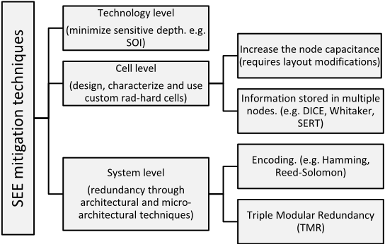
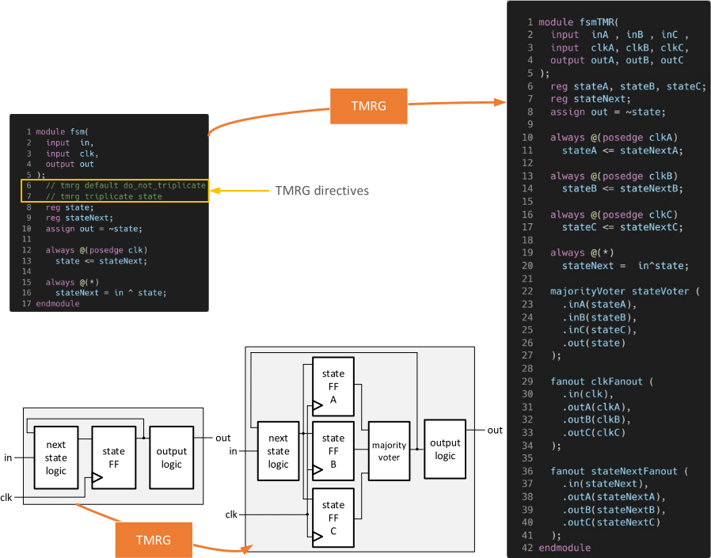

TMR 既可以在模块级实现，也可以在更低的粒度上实现。在模块级 TMR（block-TMR）实现中，需要保护的模块（通常是 ASIC 中的一个子系统）被复制为三个模块盒，多数表决器被放置在这三个模块的输出端。如果模块的三个冗余副本之一因 SEE 而产生错误输出，另外两个正确的输出将在表决中否决该错误输出。模块级 TMR 的主要缺点是缺乏对模块内部状态的反馈。这会导致三个模块的内部状态因错误累积而随时间推移逐渐发散。虽然这种方案在低翻转率下工作良好，但对于翻转率极高的 HEP ASIC 而言并不适用。在 HEP ASIC 中，TMR 以低得多的粒度施加，通常在逻辑级。
在寄存器传输级（RTL）中手动加入 TMR 元素既耗时又容易出错。CERN 开发的三模冗余生成器（TMRG）工具将数字电路三倍复制的流程自动化，使设计者无需在 RTL 编码阶段手工引入 TMR 代码。TMRG 是一款开源工具，可用于对 Verilog 设计进行三倍复制。为确保最大的灵活性，TMRG 工具允许设计者决定哪些模块和信号应被三倍复制。对 TMRG 工具的指令以注释的形式放置在 RTL 代码中。关于 TMRG 及其功能的深入描述可参见 [3]。
图 2 和图 3 展示了如何使用 TMRG 将 TMR 应用于一个通用有限状态机（FSM）。通过使用经多数表决的状态来确定 FSM 的下一状态，从而避免了错误累积。虽然图 2 所示的方案足以保护设计免受时序单元中单粒子翻转（SEU）的影响，但它并不能保护设计免受组合逻辑或表决器中单粒子瞬态（SET）的影响。由于 SET 是 HEP ASIC 所关注的问题，因此采用了如图 3 所示的完整 TMR 解决方案，其中组合逻辑、时序逻辑和时钟均被三重化。这种完整的三重化保证了设计中所有节点对 SEU 和 SET 均具有鲁棒性。
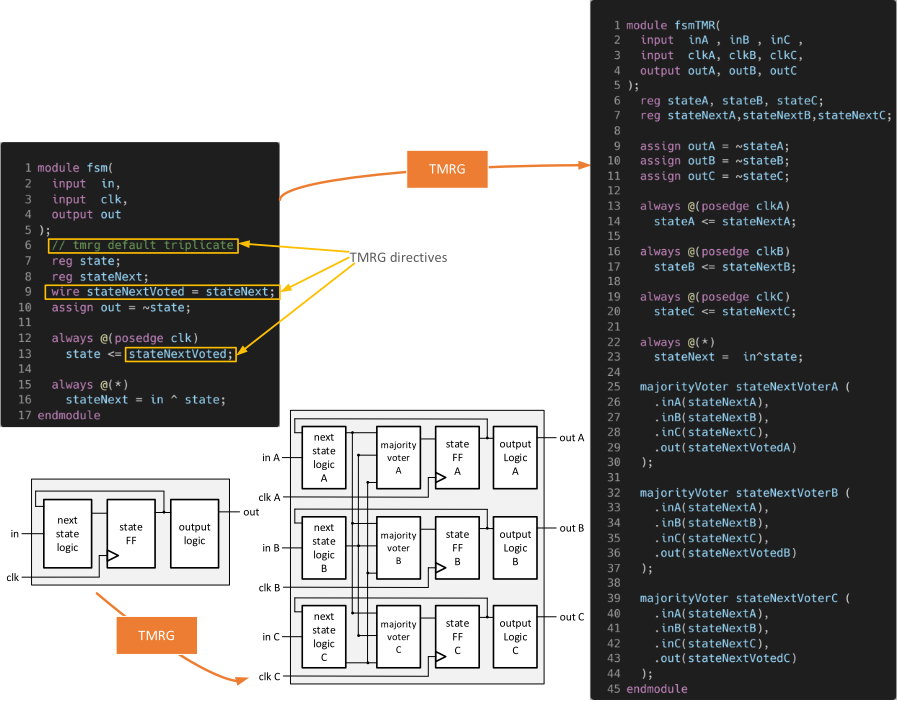

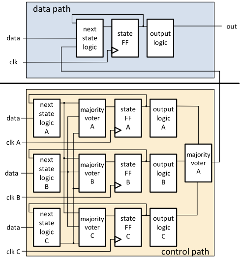
将 TMR 技术应用于整个设计的代价极其高昂。在典型的 HEP ASIC 中，设计者会根据 ASIC 的需求确定必须三重化的逻辑子集。选择性三重化的一个简单例子是：逻辑的控制路径被三重化，而数据路径则不加保护，如图 4 所示。选择性三重化的过程容易出错，因此需要细致的验证来证明 TMR 意图与 TMR 实现的正确性。SEE 验证在 HEP ASIC 开发中起着至关重要的作用，这些技术将在第 III 节中描述。
III. SEE VERIFICATION TECHNIQUES
对单粒子效应（SEE）的耐受能力是 HEP ASIC 确保可靠、稳健运行的最关键方面之一。SEE 验证是功能验证流程中不可或缺的组成部分，并被纳入整体验证策略与计划之中。仿真与形式验证技术均被用于验证设计的 SEE 鲁棒性。在验证过程中，必须满足两个主要的 SEE 验证目标：
用于 SEE 验证的仿真方法可同时应对这两个验证目标。目前，形式化方法仅用于检验 TMR 实现的正确性。第 III.A 节详细介绍了用于实现基于仿真的 SEE 验证策略的 SEE 验证框架。第 III.B 节则详细阐述如何利用模型检验来验证 TMR 的正确性。
A. Simulation methods
To achieve comprehensive verification sign-off for SEE tolerance, a robust strategy toward SEE verification must be defined. The SEE verification requirements of the project are considered while building the functional verification framework. SEE tolerance requirements vary depending on the ASIC's application in the HEP experiment. For instance, ASICs used to implement high-speed links in the detector have stringent data integrity requirements compared to front-end readout ASICs where data losses may be tolerated. These requirements are built into the scoreboards used in functional verification. Early planning for comprehensive SEE verification improves verification productivity by reducing the need for extensive refactoring of verification frameworks at later stages. Additionally, automatic scoreboarding of SEE tolerance enables the implementation of highly constrained random tests that include fault injections.
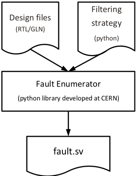
SEE verification starts with a fault generation flow, shown in Figure 5. The fault enumerator is a python library developed at CERN. It takes the design files, either in RTL or Gate Level Netlist (GLN) format, and a filtering
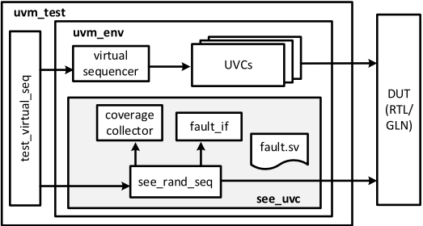
strategy as inputs and generates a filtered list of fault nodes in System Verilog format (fault.sv). The output file generated by this flow is utilized by SEE UVC to inject constrained random faults (Figure 5). In the absence of a filtering strategy, the fault enumerator extracts an exhaustive list of design nodes for SEU and SET injection. A filtering strategy can optionally be implemented using the Python APIs of the fault enumerator. This strategy helps users select a subset of design nodes for SEE injection based on test intent. For instance,
it may be desirable to inject SEUs only in TMR nodes to prove the correctness of TMR implementation.
Fault injection is performed using SEE UVC, which is integrated into the UVM verification environment as shown in Figure 6. SEE UVC consists of a random SEE injection sequence ( see_rand_seq ), a coverage collection component, and a fault debug interface ( fault_if ). The see_rand_seq randomly injects either an SEU or a SET, multiple times at randomly chosen moments during the simulation, on a randomly selected node. The sequence implementation assures random stability of simulation with and without fault injection. This enables users to repeat simulations with the same functional stimuli by either enabling or disabling fault injection. In addition to assuring random stability, see_rand_seq also allows users to easily constrain and control fault type, fault time, fault node, and fault duration (for SETs).
During fault injection, SEU is modeled as a deposit of the inverted value on a memory element, and SET is modeled as a temporary glitch on a net using force and release mechanisms. The implementation of deposit, force,
和 release 利用 uvm_hdl_* 方法，这些方法使 SEE UVC 能够高效地实现与仿真器的互操作。用于对 SEU 和 SET 注入进行建模的伪代码如图 7 所示。
SEE UVC 还包含一个覆盖率收集组件，该组件在每次故障注入时对一个 coverpoint 进行采样。这些数据在多次故障仿真中收集后，可提供一个有用的度量指标，即每个可注入故障的节点上被注入的故障数量。故障覆盖率信息与功能覆盖率和代码覆盖率数据相结合，用于深入了解在故障注入下有多少功能被
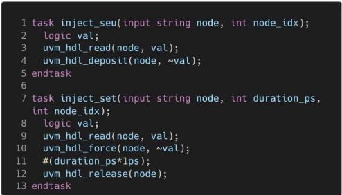
执行。除覆盖率收集组件外，SEE UVC 还包含 fault_if，它可提供对故障注入状态的高层次洞察。这是一个对交互式调试极其有用的调试特性，可让用户快速识别设计中的哪个故障导致了电路的特定行为。
验证计划中包含多种故障活动。故障活动被定义为由受约束随机测试组成的回归测试，这些测试被多次运行以达成特定的 SEE 验证目标。每个故障活动的通过率和覆盖率都会被跟踪，并用作评估 SEE 验证完备性的指标。一些典型的故障活动示例总结于表 1 中。

| Name | Goal | Method | Abstraction |
|---|---|---|---|
| TMR | Verify that all nodes that are intended to be triplicated are correctly triplicated | Two simulations are run in parallel with the same random seed: one with fault injections and the other without. All the outputs of the DUT are recorded during simulations and compared at the end. If TMR is correctly implemented, then outputs of both the simulations must match | RTL, GLN |
| Non-TMR | Verify the TMR intent is correct | Inject SEEs in non-TMR nodes and check that the fault tolerance requirements are preserved | RTL |
| Random | Verify the SEE robustness of the DUT | Inject random SEEs in the DUT at various test phases. Interleave test phases with SEE injection and without SEE injection. Enable SEE error tolerance in the checkers during SEE injection and use strict checkers when SEE injection is disabled. | RTL, GLN |
| Name | Goal | Method | Abstraction |
B. Formal methods
While simulation based SEE verification is the main workhorse for verifying SEE robustness, formal verification techniques are also incorporated. Formal property verification is used to check the correctness of TMR implementation at GLN level [5]. Due to the very low-level nature of the TMR strategy, the triplicated parts of digital circuits recover from SEUs in a predictable time (typically one clock cycle). This observation is used to
formally verify that a few cycles after one of the triplicated nodes is upset by an SEU, all the triplicated copies of that node are equal. The SEUs are modeled by modifying the standard cell primitives for sequential cells. An internal signal ( q_seu ) is added to the primitive of the cell, which is left unconnected, allowing the modelchecking tool to control it. When this signal is asserted the content of the sequential cell is toggled (see Figure 8), emulating the effect of an SEU.
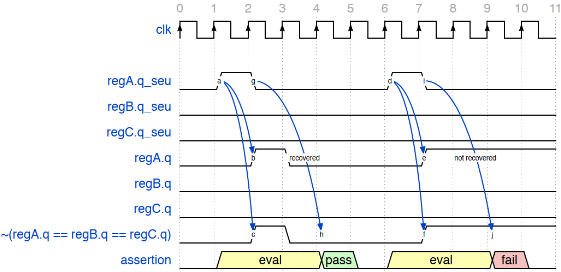
The fault enumerator python library described in section III.A is used to generate a list of System Verilog assertions and assumptions for all the TMR nodes in the design (Figure 9). Additionally, it also generates TCL files needed to steer the formal verification tool. For each of the sequential logic elements identified, the framework generates a set of assumptions and assertions. Even though the number of properties is considerable for larger designs, their computational complexity is low given their limited duration. The pseudocode of generated assertions and assumptions is shown in Figure 10.
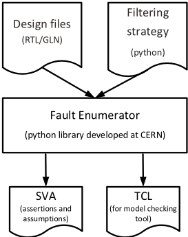
The assumptions ensure that the SEUs injected are not producing false positives. The first assumption (line 7 in Figure 10) allows injecting at most only one SEU per triplet. The second assumption (line 8 in Figure 10) ensures that each SEU has a duration of one clock cycle. This does not lose in generality since the goal of the proof is to check that an SEU is corrected within a certain number of clock cycles. The number of SEU injected in the whole design is not limited, meaning that the tool can inject one SEU in each triplet of the design. Despite this being an unrealistic condition, it does not affect a correctly triplicated design and it allows speeding up proof.
The three assertions (lines 2-4 in Figure 10) verify that an SEU is corrected within two clock cycles, for each of the three SEU in a triplet. During the first clock cycle, the SEU is injected; in the second, the SEU affects the output of the D-flipflop (DFF); and finally, the DFF is corrected in the third clock cycle. These properties should hold at
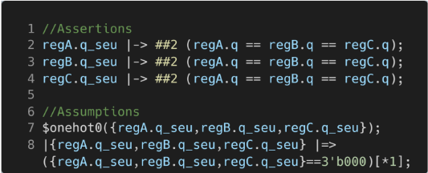
any point in time for any correctly triplicated DFF in the design, requiring no additional information on the design functionality.
IV. ANATOMY OF SEE VULNERABILITIES (BUGS)
第 II 节和第 III 节中讨论的单粒子效应（SEE）设计与验证技术，已成功应用于欧洲核子研究中心（CERN）为大型强子对撞机（LHC）高亮度升级而设计的多种专用集成电路（ASIC）中[6][7]。随着时间的推移，这些技术已日趋成熟，并成为高能物理（HEP）领域内设计 SEE 耐受 ASIC 的广泛认可的方法学。本节给出了一些典型 SEE 缺陷的示例。
A. Logic optimizations
现代综合工具会执行若干逻辑优化步骤，以实现功耗-性能-面积（PPA）目标。由于采用三模冗余（TMR）的 SEE 缓解方法依赖于冗余，综合优化步骤往往会移除冗余逻辑。如图 11 所示，设计意图要求对表决器进行三倍复制。综合工具可能会对逻辑进行优化并移除其中两个表决器。因此，综合后的设计不再能防护表决器中的单粒子瞬态（SET）。为避免此类优化，TMRG 工具会生成一组设计约束，以防止综合过程对表决器进行优化。
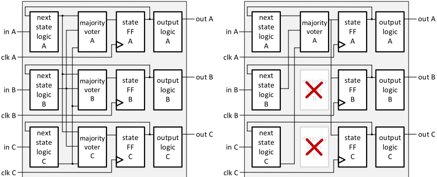

B. Using non-voted signals
TMRG 是一种便利性工具，可将插入 TMR 代码这一耗时且容易出错的任务从寄存器传输级（RTL）设计者身上卸载下来。然而，必须注意的是，错误使用 TMRG 指令往往会导致非预期的结果。其中一种错误的 TMRG 指令（图 12）便是使用未表决信号来确定有限状态机（FSM）中的下一状态。
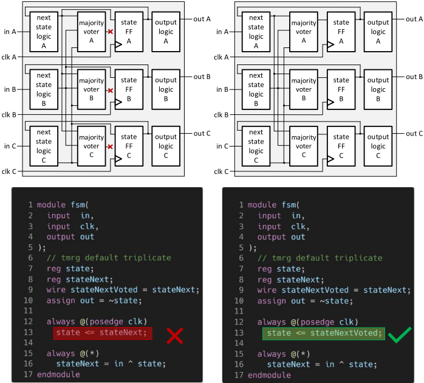
C. Missing else
Another typical error observed in RTL is the omission of the 'else' in a conditional statement within a sequential process (see Figure 13). This missing else condition results in missing feedback from the voters thus leading to error accumulation in the triplicated registers.
V. CHALLENGES AND FUTURE WORK
对高能物理实验中所使用的专用集成电路（ASIC）进行选择性加固是一个耗时且容易出错的过程。对此类 ASIC 的单粒子效应（SEE）耐受性进行验证面临重大挑战。本文概述了高能物理（HEP）ASIC 设计中所采用的 SEE 缓解与验证技术。根据我们的经验，SEE 验证在工程资源、计算资源、许可证和时间方面都非常消耗资源。成功开展 SEE 验证的关键在于早期规划。在定义验证策略和构建功能验证框架时，就必须将 SEE 验证纳入考虑。尽管我们的 SEE 验证框架解决了若干挑战，但仍存在一些具有改进潜力的方面：

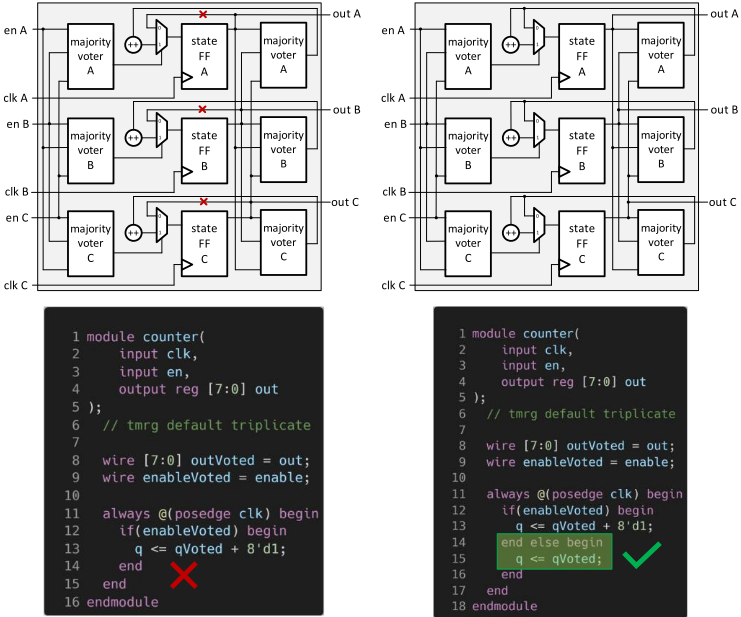
证据核查
1 条证据未在原文中核对到